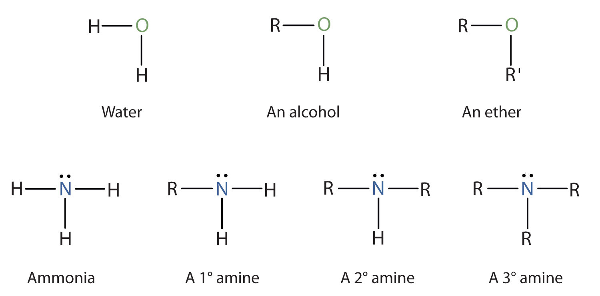

Amines are classified according to the number of carbon atoms bonded directly to the nitrogen atom. A primary (1°) amineA compound that has only one alkyl or aryl group on the nitrogen atom. has one alkyl (or aryl) group on the nitrogen atom, a secondary (2°) amineA compound that has two alkyl or aryl groups on the nitrogen atom. has two, and a tertiary (3°) amineA compound that has three alkyl or aryl groups on the nitrogen atom. has three (Figure 15.5 "The Structure of Amines Compared to Water, an Alcohol, and an Ether").
Figure 15.5 The Structure of Amines Compared to Water, an Alcohol, and an Ether
To classify alcohols, we look at the number of carbon atoms bonded to the carbon atom bearing the OH group, not the oxygen atom itself. Thus, although isopropylamine looks similar to isopropyl alcohol, the former is a primary amine, while the latter is a secondary alcohol.
The common names for simple aliphatic amines consist of an alphabetic list of alkyl groups attached to the nitrogen atom, followed by the suffix -amine. (Systematic names are often used by some chemists.) The amino groupAn NH2 unit. (NH2) is named as a substituent in more complicated amines, such as those that incorporate other functional groups or in which the alkyl groups cannot be simply named.
Name and classify each compound.
Solution
Name and classify each compound.
CH3CH2CH2CH2NH2
CH3CH2CH2NHCH2CH2 CH3
Draw the structure for each compound and classify.
Solution
The name indicates that there are an isopropyl group (in red) and two methyl groups (in green) attached to the nitrogen atom; the amine is tertiary.

The name indicates that there are two propyl groups attached to the nitrogen atom; the amine is secondary. (The third bond on the nitrogen atom goes to a hydrogen atom.)
CH3CH2CH2NHCH2CH2CH3Draw the structure for each compound and classify.
ethylisopropylamine
diethylpropylamine
The primary amine in which the nitrogen atom is attached directly to a benzene ring has a special name—aniline. Aryl amines are named as derivatives of aniline.
Name this compound.
Solution
The benzene ring with an amino (NH2) group is aniline. The compound is named as a derivative of aniline: 3-bromoaniline or m-bromoaniline.
Name this compound.
Draw the structure for p-ethylaniline and classify.
Solution
The compound is a derivative of aniline. It is a primary amine having an ethyl group located para to the amino (NH2) group.
Draw the structure for p-isopropylaniline and classify.
Draw the structure for 2-amino-3-methylpentane.
Solution
Always start with the parent compound: draw the pentane chain. Then attach a methyl group at the third carbon atom and an amino group at the second carbon atom.
Draw the structure for 2-amino-3-ethyl-1-chloroheptane.
Ammonium (NH4+) ions, in which one or more hydrogen atoms are replaced with alkyl groups, are named in a manner analogous to that used for simple amines. The alkyl groups are named as substituents, and the parent species is regarded as the NH4+ ion. For example, CH3NH3+ is the methylammonium ion. The ion formed from aniline (C6H5NH3+) is called the anilinium ion.
Name each ion.
Solution
The ions have one, two, three, and four methyl (CH3) groups attached to a nitrogen atom. Their names are as follows:
Name each ion.
CH3CH2NH3+
(CH3CH2)3NH+
(CH3CH2CH2)2NH2+
(CH3CH2CH2CH2)4N+
To what inorganic compound are the amines related?
How are amines classified?
ammonia
by the number of hydrocarbon groups on the nitrogen atom: primary amine, one group; secondary amine, two groups; tertiary amine, three groups
The amine functional group is as follows:
Draw the structure for each compound and classify the amine as primary, secondary, or tertiary.
Draw the structure for each compound and classify the amine as primary, secondary, or tertiary.
Draw the structure for each compound.
Draw the structure for each compound.
Name each compound.
Name each compound.
Draw the structure for each compound.
Draw the structure for each compound.
Name each compound.
Name each compound.
tertiary